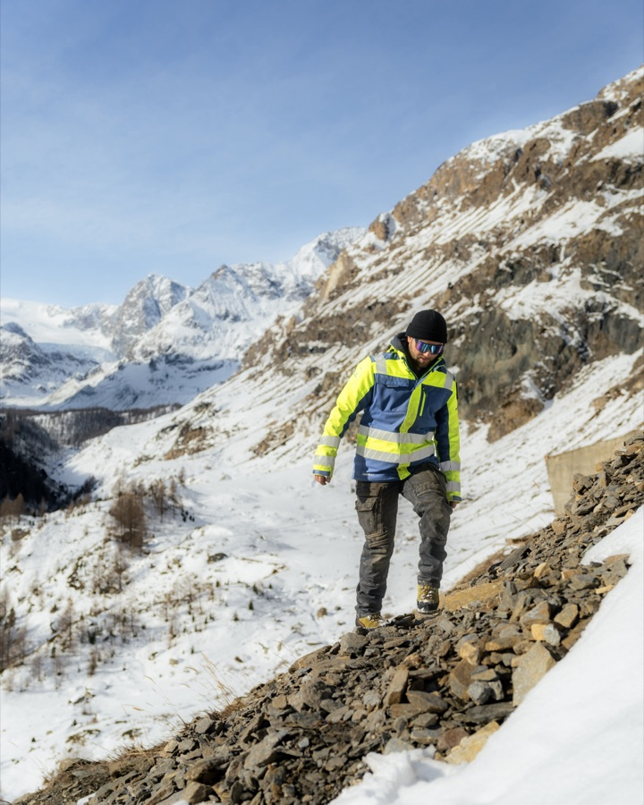
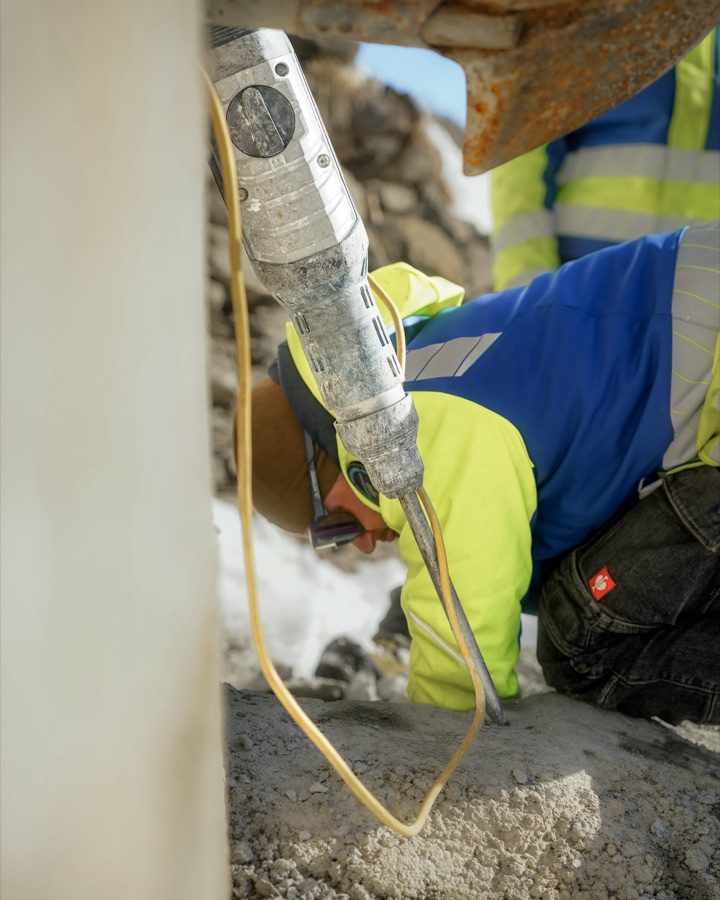
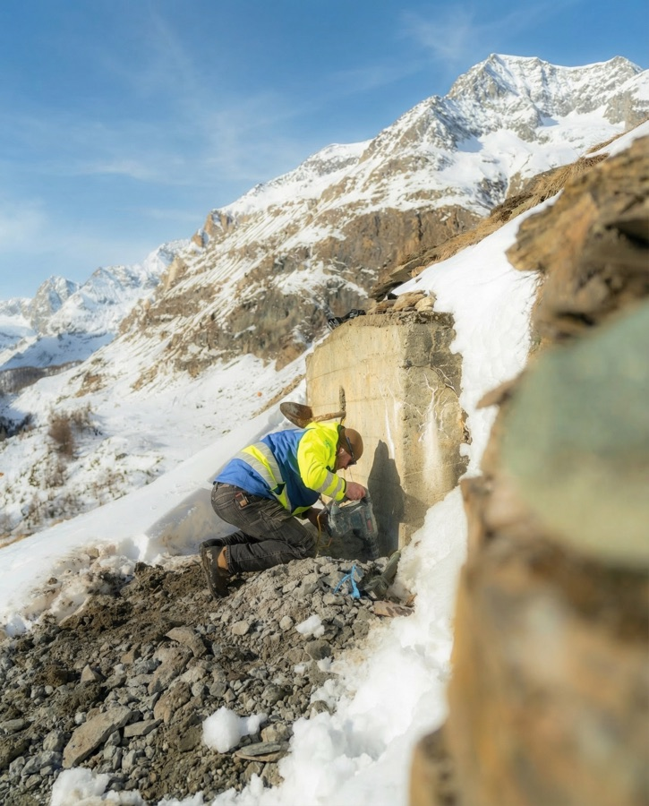
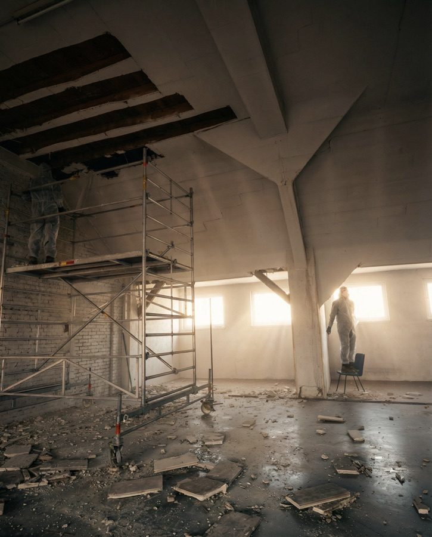
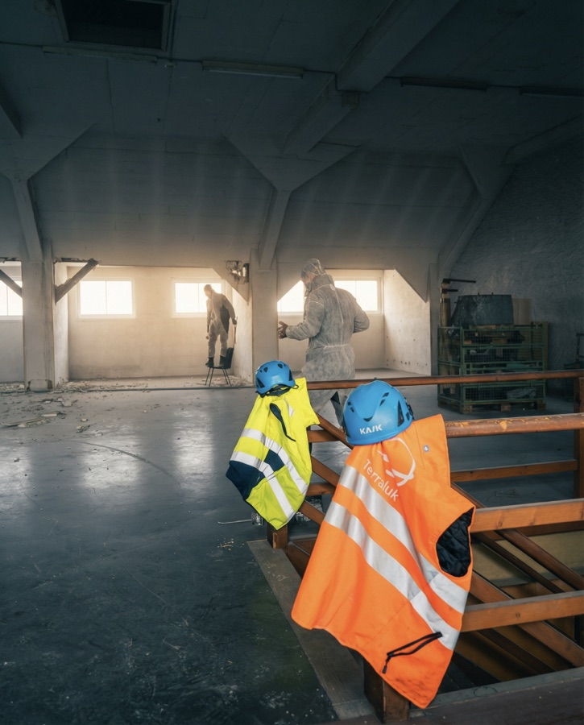
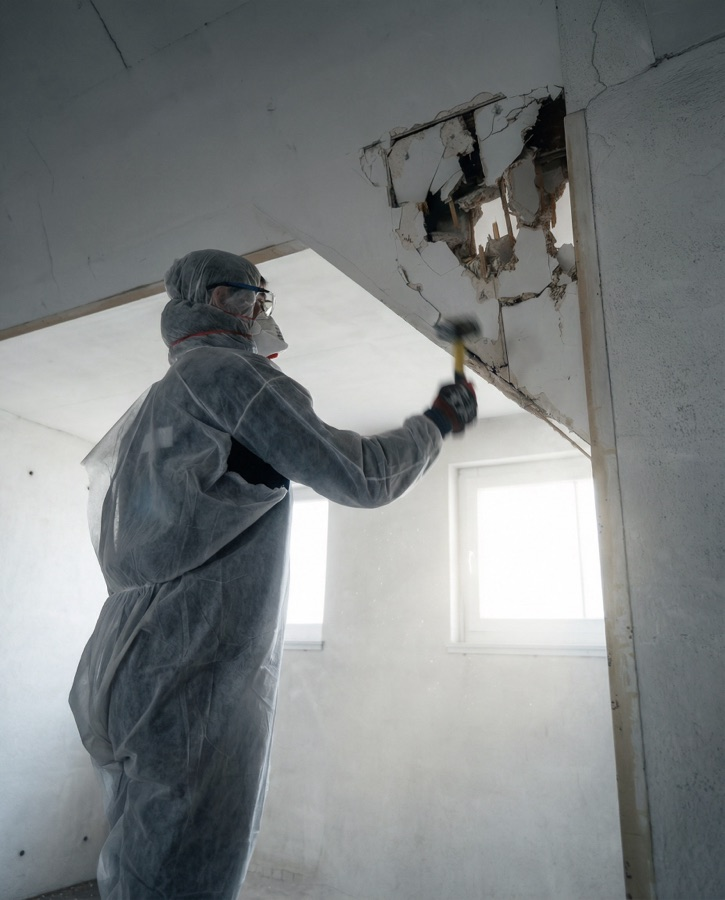
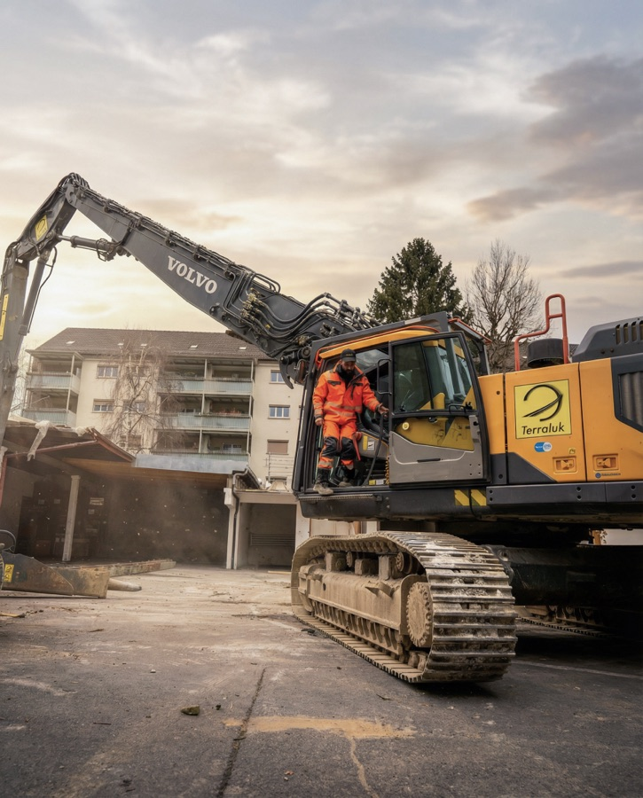
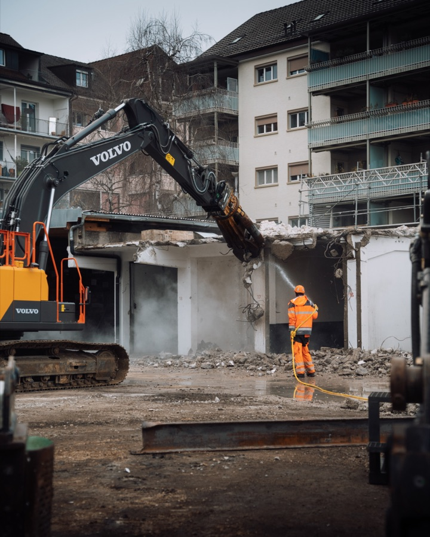

Content auf
3000 Metern über Meer.
Von der Werkstatt
auf den Gletscher.
Wenn in Zermatt im Winter die Pisten laufen, ist die Arbeit längst getan. Die Kilian Huber GmbH sorgt mit Rohrbau, Pumpstationen und Metallbau dafür, dass die Infrastruktur im Schweizer Alpenraum funktioniert – unter anderem direkt in Zermatt.
Während der schneefreien Monate wird gebaut, montiert und installiert. Rohrleitungen und Pumpstationen schaffen die Grundlage für eine zuverlässige Beschneiung und Wasserversorgung – oft abseits der Orte, an denen später die Touristen unterwegs sind.
Genau diese Arbeit wollten wir sichtbar machen.


Unser Auftrag
Die Zusammenarbeit mit der Kilian Huber GmbH ist langfristig angelegt und nicht an ein einzelnes Projekt gebunden. Wir begleiten die Einsätze laufend, halten relevante Arbeiten fotografisch und filmisch fest und bauen daraus einen kontinuierlichen Instagram-Auftritt auf – von spontanen Stories bis zu regelmässigen Reels.
Dabei geht es um mehr als reine Sichtbarkeit. Mit dem Content möchte die Kilian Huber GmbH gezielt neue Auftraggeber im alpinen Umfeld erreichen und gleichzeitig qualifizierte Fachkräfte für das Unternehmen gewinnen. Markenaufbau, Reichweite und Recruiting werden so über einen gemeinsamen Kanal miteinander verbunden.
Für die Einsätze in Zermatt bedeutet das: Wir sind während der gesamten Bausaison immer wieder vor Ort und begleiten die Arbeiten je nach Baufortschritt an unterschiedlichen Standorten – von der Werkstatt im Tal bis zur Pumpstation auf 3000 Metern. Statt eines einzelnen Produktionstages entsteht der Content laufend dort, wo etwas passiert, das es wert ist, festgehalten zu werden.
Impressionen





Die Bedingungen
Content-Produktion in den Bergen funktioniert nicht nach Drehplan. Ein Grossteil der Arbeiten findet an abgelegenen Standorten statt, die nur per Helikopter erreichbar sind. Material und teilweise auch Personal werden eingeflogen, jeder Flug ist wetterabhängig – und ein geplantes Zeitfenster kann sich kurzfristig wieder verschieben.
Dazu kommt eine weitere Herausforderung: Eine Baustelle wartet nicht auf die Kamera. Zwischen Kran, Bauteam und laufenden Maschinen müssen wir uns bewegen, ohne den Arbeitsablauf zu stören. Das bedeutet enge Abstimmung mit der Bauleitung, Flexibilität vor Ort und vor allem eines: im richtigen Moment am richtigen Ort zu sein.
Keine gestellten Szenen, kein Wiederholen für die Kamera. Wir halten die Arbeit so fest, wie sie tatsächlich passiert.
Impressionen







Unsere Lösung
Statt eines fixen Drehplans setzen wir auf eine Produktion, die sich dem Baustellenalltag anpasst. Wenn sich ein Wetterfenster öffnet oder auf der Baustelle ein wichtiger Arbeitsschritt ansteht, sind wir kurzfristig bereit. Mit kompakter und robuster Ausrüstung können wir flexibel arbeiten – vom Tal bis zur Baustelle auf 3000 Metern.
So entstehen Aufnahmen nicht nach einem vorgegebenen Ablauf, sondern genau dann, wenn etwas passiert. Ohne grosses Team, ohne aufwendige Inszenierung und ohne den Betrieb aufzuhalten.
Damit aus diesen spontanen Einsätzen trotzdem ein konsistenter Auftritt entsteht, arbeiten wir mit einer klaren Bildsprache und wiederkehrenden Stilmitteln. Über die gesamte Bausaison entsteht so kontinuierlich neues Material – und aus einzelnen Einsätzen ein zusammenhängender Content-Auftritt.
Hard Facts
Die Zahlen
sprechen für sich.
Seit Mai 2026 verfolgen wir für die Kilian Huber GmbH eine gezielte Content-Strategie auf Instagram — mit spürbarem Effekt auf Reichweite und Community.
Follower-Wachstum
Seit Mai 2026 · +83 %
Juli bis August 2026
Der Account heute
kilian_huber_gmbh
Kilian Huber GmbH
Hochalpiner Rohrleitungsbau

Was wir geliefert haben
Baudokumentation
Laufende fotografische und filmische Begleitung der Bauprojekte — von der Werkstatt bis zur alpinen Baustelle, projektübergreifend und über mehrere Einsätze hinweg.
Aufnahmen auf 3000 m ü. M.
Dreh direkt an der Pumpstation Blauherd — dort, wo das Material per Helikopter ankommt und die Bedingungen den Produktionstag bestimmen.
Reels
Kurzformatiger Video-Content aus Werkstatt und Baustelle für Instagram — nah am Handwerk, ohne Effekthascherei.
Projekt-Doku
Ein wachsendes Bildarchiv, das einzelne Bauprojekte von Anfang bis Ende nachvollziehbar macht — nutzbar für Website, Referenzen und Ausschreibungen.
Was steht bei dir an?
Auch deine Firma verdient Content,
der durch die Decke geht.
Von der Werkstatt bis zur Baustelle — wir begleiten dein Projekt genauso persönlich wie das der Kilian Huber GmbH.